Inside Component
Add Source Dialog
The Add Source dialog creates or edits one source inside a selected box. A source is the actual thing the box will show or play when the box is triggered.
How To Open It
Select a box on the overlay stage, then open the box inspector and click Add source in the Sources section. Existing sources can also be edited from that same list.
The dialog saves the source into the selected box. It does not create a new box, move the box, or change the overlay URL.
Source Tabs
Each tab creates a different kind of source. Pick the tab that matches what the selected box should show or play, then fill in the tab-specific options below.
Defined Sources Tab
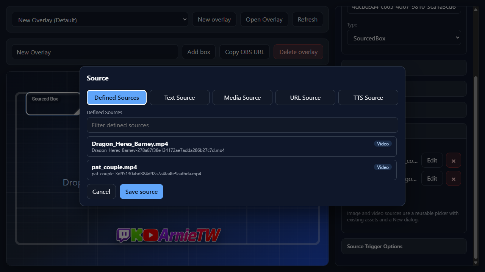
Use this tab when the source already exists in the reusable source library.
Defined SourcesSource cardsText Source Tab
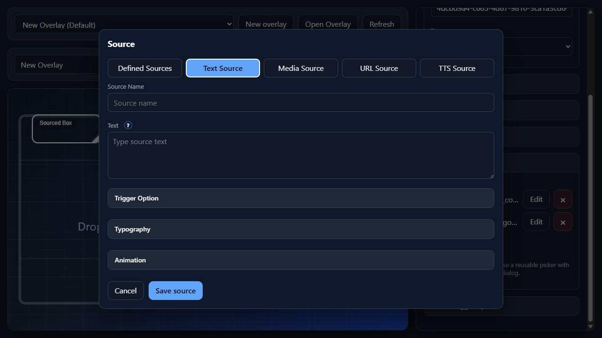
Use this tab for captions, labels, chat callouts, or any overlay text.
Source NameTextArgument ControlTrigger OptionTypographyAnimationMedia Source Tab
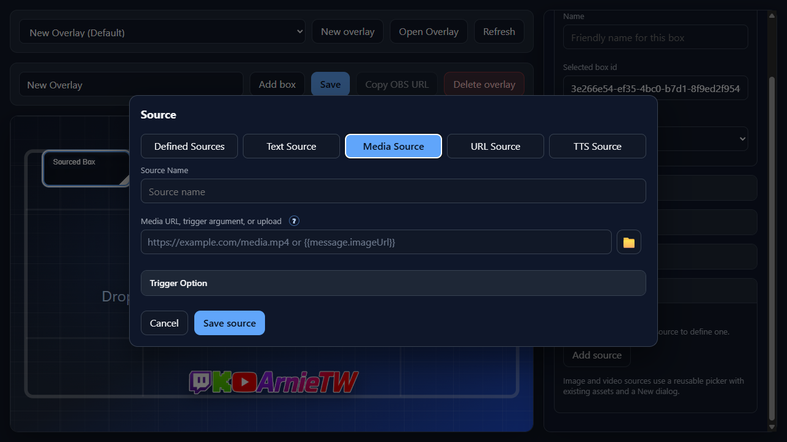
Use this tab for images, videos, and audio cues. Media can come from a normal URL, a local upload, or a trigger argument such as {{message.imageUrl}} when the trigger event provides the media URL dynamically.
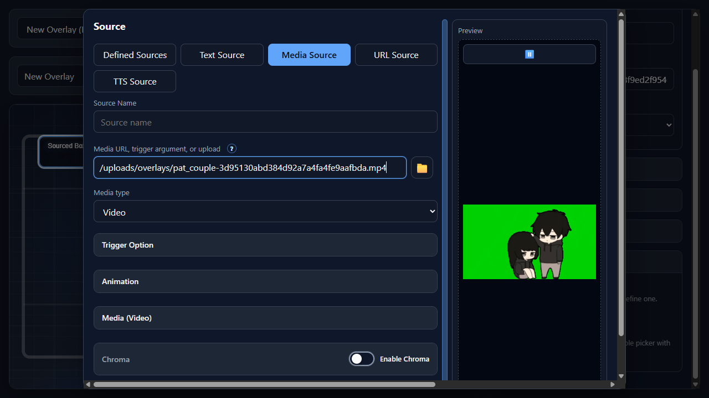
Source NameMedia URL, trigger argument, or uploadTrigger argument mapping{{ to insert a trigger token through the Argument Control. A trigger-mapped media source must be one token by itself, for example {{message.imageUrl}}, so NekoBot can treat the trigger value as the media URL.Media typeImage, Video, or Audio when NekoBot cannot infer the type reliably from the file, URL, or trigger argument.Folder buttonClear buttonTrigger OptionAnimationMediaChromaPreviewURL Source Tab
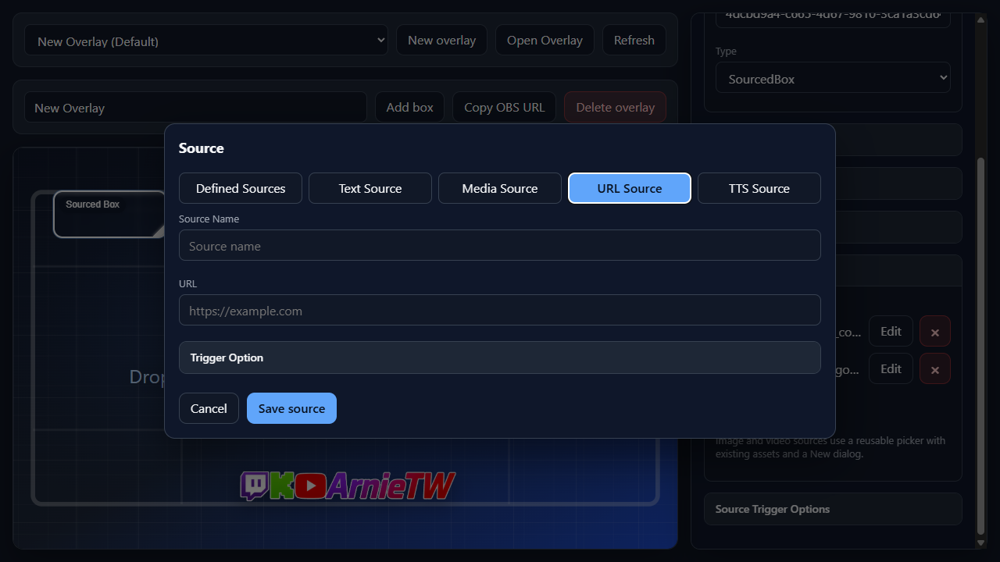
Use this tab for browser-rendered widgets or pages that should appear inside a box.
Source NameURLTrigger OptionTTS Source Tab
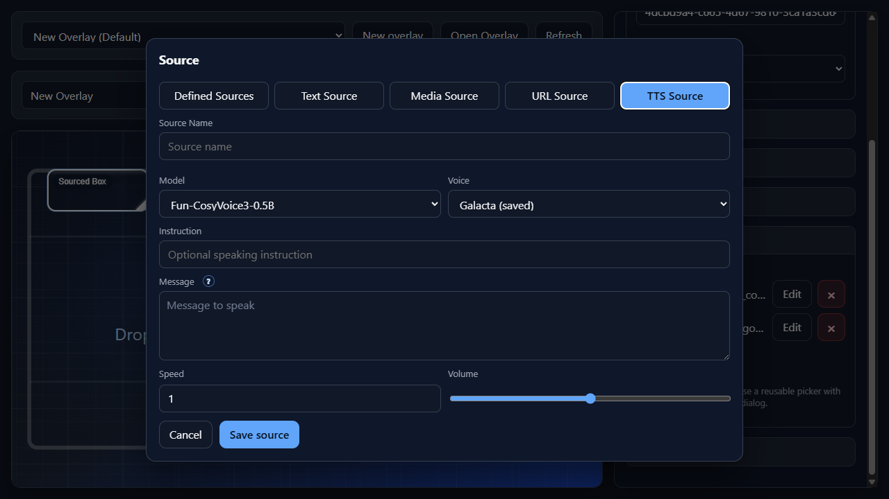
Use this tab for generated voice audio. It depends on enabled TTS models and, when required by the selected model, a saved cloned voice.
Source NameModelVoiceInstructionMessageArgument ControlSpeedVolumeCommon Options
These options appear on multiple source tabs. Tab sections link to the specific shared option they use.
Trigger Option
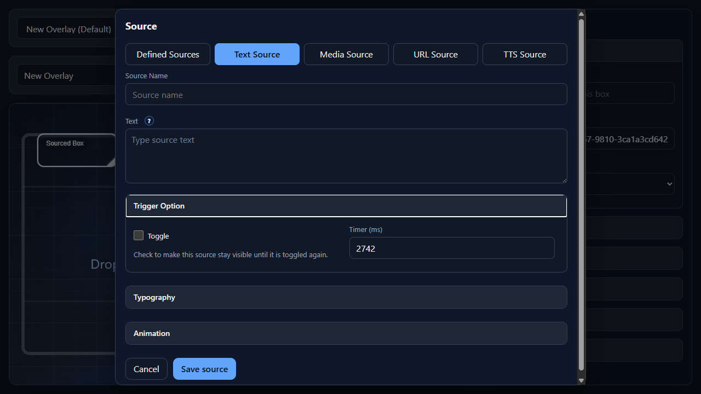
Used by Text, Media, and URL sources. Trigger Option controls how long the source stays active after it appears.
Trigger OptionToggleTimer (ms)5000 means five seconds.Auto durationTypography
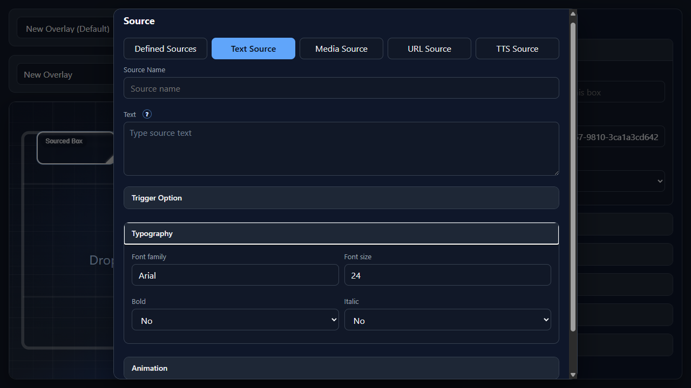
Used by Text sources. Typography controls how text sources are rendered inside the box.
TypographyFont familyArial.Font sizeBoldYes for bold text or No for normal weight.ItalicYes for italic text or No for upright text.Animation
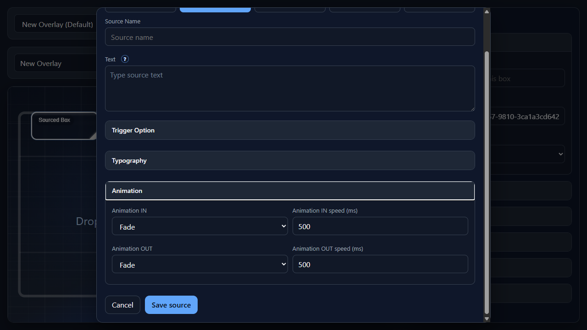
Used by Text, Image, and Video sources. Animation controls how a visual source enters and exits the overlay.
AnimationAnimation INFade, Slide top, Slide left, Zoom, and Bounce.Animation IN speed (ms)Animation OUTAnimation OUT speed (ms)Media
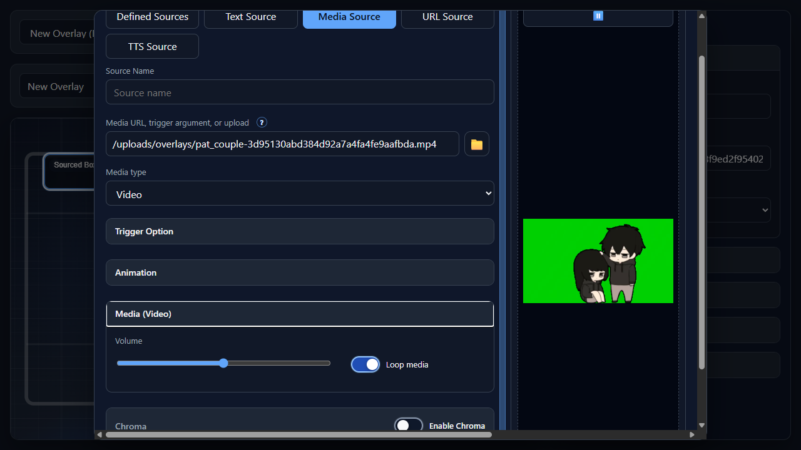
Used by Video and Audio sources. Media settings control playback behavior.
Media (Video) / Media (Audio)VolumeLoop mediaChroma
Used by Image and Video sources. Chroma removes a keyed color, usually a green background, from the source.
Enable ChromaKey colorColor Picker (in "Key color")SimilaritySmoothnessPreview
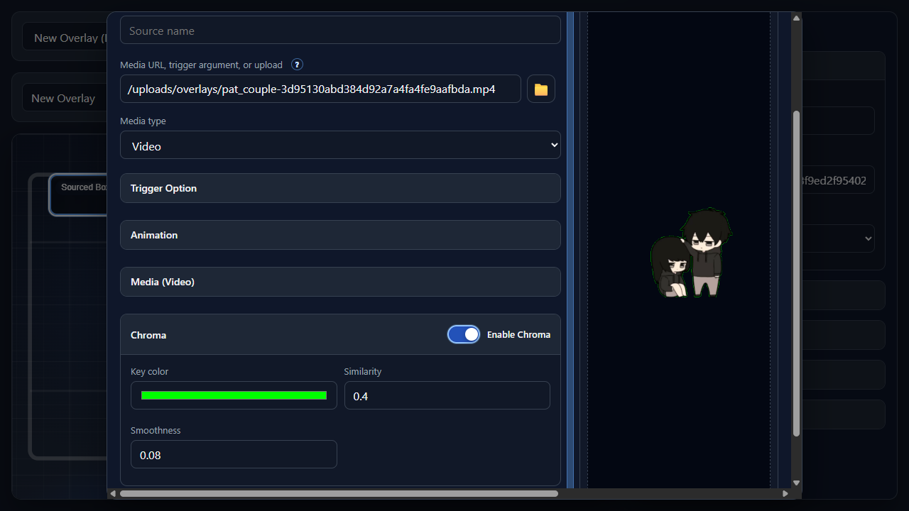
Used by previewable sources. Preview shows what the source will look or sound like before saving.
PreviewResize previewPlayback controlsActions
CancelSave source